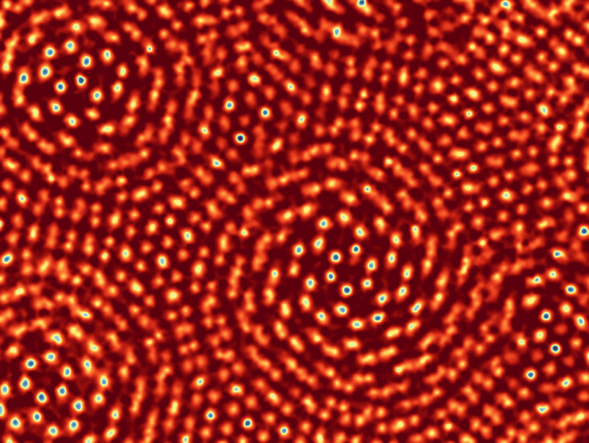
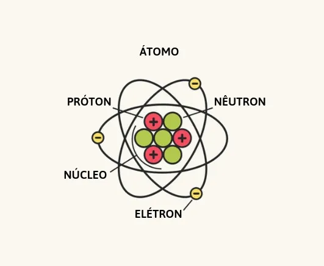
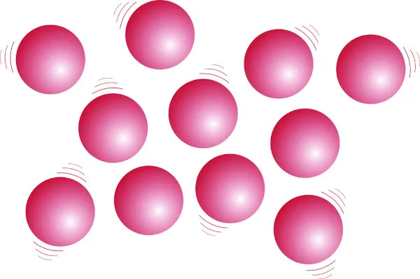
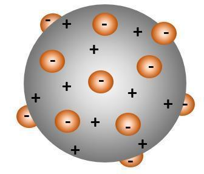
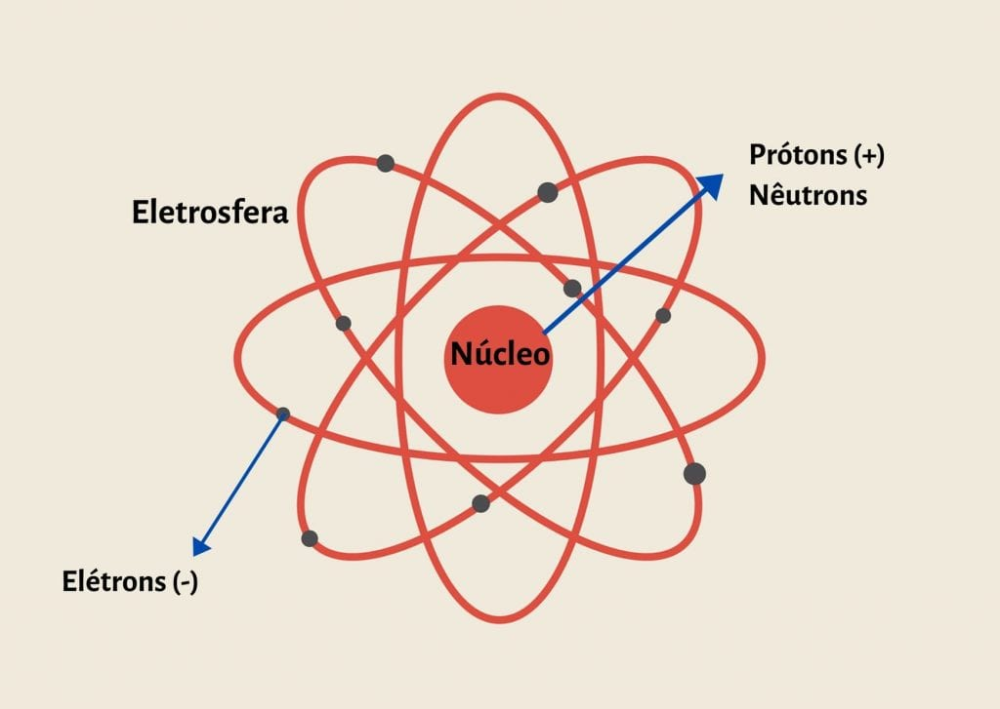
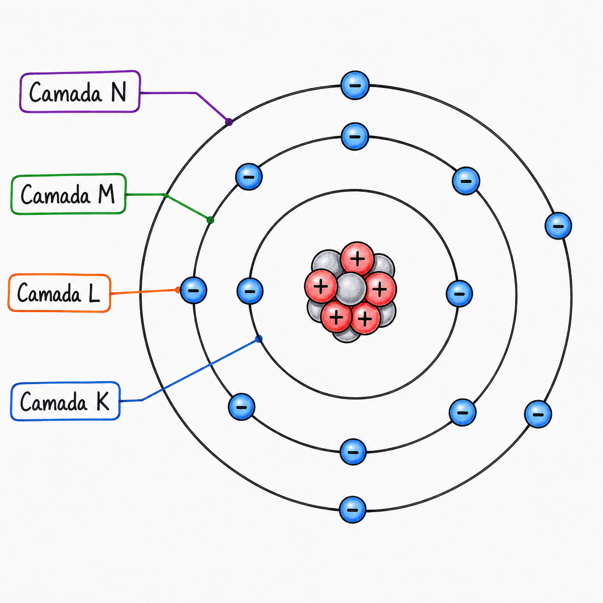
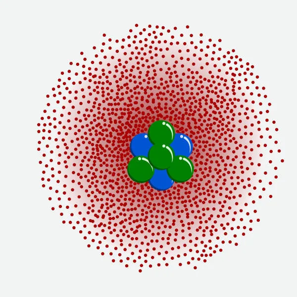

Um átomo é a menor unidade fundamental da matéria que compõe tudo ao nosso redor

| P | N | E | Z = P | A |
|---|---|---|---|---|
| Prótons | Nêutrons | Elétrons | Número atômico = Prótons | Massa |
| P = A - N |
N = A - Z N = A - P |
E = P Íons = + = perder elétrons, E = P - Carga Ânions = - = ganhar elétrons, E = P + Carga |
Z = A - N |
A = Z + N A = P + N |

O modelo atômico da bola de bilhar foi proposto pelo cientista inglês John Dalton em 1808
Devido à
sua forma, ficou conhecidacomo modelo da bola de bilhar. pois descrevia o átomo
como uma
partícula
minúscula, esférica, maciça, indivisível e indestrutível, falando sobre os
átomo do mesmo
elemento
são iguais.

O segundo modelo atômico, descoberto em 1897 proposto pelo físico inglês Thomson, é conhecido como o
modelo
do
pudim de passas. Apresentando o átomo como uma esfera de massa positiva com partículas de carga
negativa
(os elétrons) e em 1904 ele publicou o seu artigo científico detalhando a estrutura atômica.

Modelo Atômico de Rutherford, também conhecido como modelo planetário, conta que o átomo possui
um
núcleo muito pequeno, denso e com carga positiva, e os elétrons giram ao redor do núcleo, os
elétrons
séria os planetas eo núcleo o sol, por isso e conhecido como modelo planetário.

O modelo atômico de Bohr (Rutherford-Bohr) aprimorou o modelo de Rutherford, propondo que os
elétrons giram ao redor do núcleo em órbitas circulares definidas, chamadas de níveis de energia
mais conhecida como camadas eletrônicas. Existem, no máximo, sete camadas na eletrosfera,
representadas pelas letras (K, L, M, N, O, P, Q). Cada camada possui um valor de energia.
| K | L | M | N | O | P | Q |
|---|---|---|---|---|---|---|
| 2 | 8 | 18 | 32 | 32 | 18 | 8 |

O modelo mais atual, modelo quântico ou de nuvem eletrônica, foi proposto por Erwin Schrödinger em
1926,
fala que
os eletrons se movem tão rápido que formam uma nuvem, e não tem como saber o lugar
específico desse elétron
temos como saber a região mas não o local específico, as orbitais
atômicos tem uma probabilidade de 90% de encontrar
um elétron.
